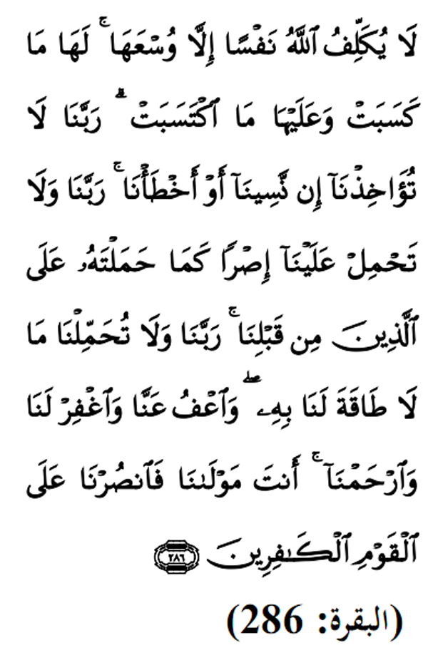

|

Terjemahan Allah tidak membebani seseorang melainkan sesuai dengan kesanggupannya. Ia mendapat pahala (dari kebajikan) yang diusahakannya dan ia mendapat siksaan (dari kejahatan) yang dikerjakannya. (Mereka berdoa) : "Ya Tuhan kami, janganlah Engkau hukum kami jika lupa atau kami bersalah. Ya Tuhan Kami janganlah Engkau bebankan kami beban yang berat sebagaimana Engkau bebankan kepada orang-orang yang sebelum kami. Ya Tuhan Kami, janganlah Engkau pikulkan kepada kami apa yang tidak sanggup kami memikulnya. Berikanlah maaf kepada kami. Engkaulah penolong kami, maka tolonglah kami terhadap kaum yang kafir." Fadhilat Wirid Dalam hadith yang lain yang diriwayatkan oleh Ibn Mas'ud (RA), Rasulullah (SAW) bersabda: "... sesiapa yang membaca sepuluh ayat ini: Empat di awal surah Al - Baqarah, ayat Kursi, dan dua ayat berikutnya dan akhir surah Al - Baqarah, maka rumahnya akan selamat daripada dimasuki syaitan hingga ke pagi hari." |